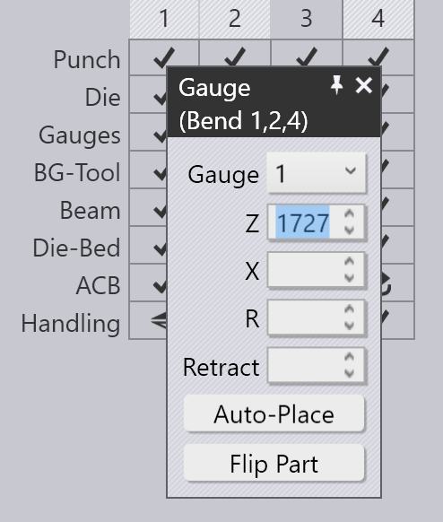

백게이지 편집
각 벤딩부에 대한 백게이지 위치는 백게이지 클릭만으로 조정할 수 있습니다.옆에 보이는 것처럼 게이지 패널이 열립니다.
게이지 패널

-
Gauge 선택기를 사용하여 편집하려는 게이지를 선택할 수 있습니다(게이지를 클릭만하면 패널이 표시되어 해당 게이지를 편집할 수 있습니다).Shift+Click으로 다른 게이지를 클릭하면 두 게이지의 공통 설정을 함께 편집할 수 있습니다.
-
Z, X 및 R 입력은 세 치수에서 게이지의 위치를 조정하는 데 사용됩니다. 대부분의 프레스 브레이크의 경우 축은 아래 이미지에 표시된 대로입니다:[1]

-
Surface 선택기는 스톱 핑거의 다른 _표면_과 맞물리는 데 사용됩니다. 사용 가능한 표면 세트는 기계에 따라 다르고, 모든 표면이 모든 벤딩부에 적용될 수 있는 것은 아닙니다(TecZone Bend는 언제 특정 표면을 사용할 수 없는지 알려줍니다). 아래 이미지는 사용되고 있는 다른 표면을 보여줍니다:

-
이 Retract 설정은 벤딩 전에 게이지 후진 간격을 설정하는 데 사용됩니다. 일부 벤딩부의 경우, 파트가 펀치에 의해 끼인 후 벤딩 전에 게이지를 일정 간격만큼 (+ X 방향으로) 후진해야 합니다(충돌을 피하기 위해). 이 설정은 후진 간격을 제어하는 데 사용됩니다. 이를 편집할 때 TecZone Bend는 실제로 게이지를 지정된 양만큼 미리보기로 후진시켜 보여주므로 후진이 충분한지 판단할 수 있습니다.
-
Auto-Place 버튼을 사용하여 TecZone Bend가 지정된 게이지에 대한 위치를 자동으로 계산하도록 할 수 있습니다. 일반적으로 TecZone Bend는 여러 가지 게이징 가능성을 제공하며, 자동 배치 버튼을 반복해서 클릭하면 해당 가능성들이 차례대로 수행됩니다. _기본값_으로 되돌리려면, 게이지 패널을 닫고, 게이지를 다시 클릭한 다음 자동 배치를 클릭합니다. 그러면 선택한 첫 번째 위치가 기본값이 됩니다 (이는 원래 자동 시퀀싱 및 툴링의 결과입니다).
-
Flip Part 버튼을 사용하여 파트의 다른 쪽을기계에 삽입하고 게이지를 새로 계산할 수 있습니다. 이는 벤딩 패널에서 Flip Part와 유사합니다.
-
Prev 및 Next 버튼을 사용하여 이전 또는 다음 벤딩부로 이동하고, 해당 벤딩부의 게이지 위치를 편집할 수 있습니다.
고급
게이지를 이용해 수행할 수 있는 좀 더 고급 작업 과정은 다음과 같습니다:
여러 벤딩부용 게이징 편집하기
여러 벤딩부의 게이지 위치를 동시에 편집할 수 있습니다.이를 수행하려면, 먼저 벤딩 네비게이터에서 벤딩부 번호를 Shift+Click하여 여러 벤딩부를 선택합니다. 그런 다음 게이지를 클릭합니다. 옆의 이미지는 함께 편집되는 벤딩부 1, 2 및 4의 게이지 위치를 보여줍니다:

이 예에서, 이 벤딩부 모두는 게이지에 대해 동일한 Z 위치를 사용하며, 이 위치를 편집하면 모든 게이지의 Z 위치가 조정됩니다. X와 R 위치 값은 각 벤딩부마다 다르기 때문에 비어있습니다. 하지만 X 또는 R 값을 입력하면 모든 벤딩부에 적용됩니다.
I일반적으로 이 기능을 사용할 필요가 거의 없습니다. 게이지 패널은 특정 프레스 브레이크의 한계 범위를 알고 있으며, 필요한 모든 제약을 시행합니다. 예를 들어, 두 게이지의 R 위치는 일부 기계에 동일해야 합니다(독립적인 R1 및 R2 축이 없음). TecZone Bend는 한 게이지의 R 위치를 편집할 때 다른 게이지도 즉시 추적되도록 조정합니다.
2축 게이지 시스템이 있는 일부 기계의 경우, 게이지의 Z 위치는 수동으로 설정되며, 일반적으로 벤딩부에서 벤딩부로 변경되지 않습니다(그러면 조작자가 매번 벤딩할 때마다 게이지를 수동으로 조정해야 하기 때문입니다).이러한 기계의 경우, 하나의 벤딩부에 Z 위치가 설정되면, 모든 벤딩부에도 동일하게 설정됩니다. 충돌 상태, 게이지 참여 상태 등은 모든 벤딩부에 대해 즉시 계산됩니다. 따라서 모든 벤딩부에 적합할 수 있는 공통 Z1 및 Z2 위치를 찾기가 매우 쉽습니다.
게이지 드래그하기
정확한 게이징 위치는 Z, X 및 R 값을 입력하여 설정할 수 있지만, 게이지를 파트에 접촉하도록 드래그하여 위치를 조정하는 것이 더 간단한 경우가 많습니다.
-
드래그할 게이지를 선택하려면 한 번 클릭하합니다.
-
선택한 게이지를 클릭하고 드래그하여 위치를 지정합니다. _관점_에 따라 게이지가 수평 또는 수직 평면을 따라 드래그됩니다.
일반적으로 게이지가 파트에서 떨어져 있는 상태에서 시작하여 닿을 때까지 해당 파트를 향해 드래그합니다. 계속 드래그하면(게이지를 파트 안으로 밀어넣으면), _와이어프레임_은 계속 움직이지만 실제 게이지는 파트에 닿으면 멈춥니다.

위 이미지는 작동 방식을 보여줍니다. 화살표가 가리키는 방향으로 게이지를 시트 쪽으로 드래그하기 시작합니다. 게이지가 시트에 닿자마자, 시트가 멈추고 와이어프레임 표현만 계속 움직입니다(게이지를 드래그하려는 위치를 보여줍니다). 이렇게 하면 틈새나 충돌 없이 게이지가 파트에 닿도록 쉽게 위치를 조정할 수 있습니다.
위 이미지에서 우리는 하향식_에 가까운 관점에서 게이지를 보고 있습니다. 따라서 게이지가 XZ 평면에서 이동하고 게이지의 R 값은 일정하게 유지됩니다. 보기를 더 _끝쪽 보기로 회전하면, 게이지가 XR 평면에서 이동하고 Z 값은 일정하게 유지됩니다.
드래그하는 동안 클램프 스냅
게이지를 드래그하면 정지 타입 표면 중 하나를 사용할 때 게이지를 정확하게 위치시키는 것이 쉽습니다. 보다 어려운 것은
클램프 타입 표면 중 하나를 사용할 때입니다. 클램핑 핑거의 두 표면을 파트에 맞물리게 해야 하기 때문입니다.
TecZone Bend는 게이지가 가능한 _클램핑 위치_에 가까워지면 자동으로 _스냅_을 제공하여 이 작업을 쉽게 해줍니다. 이 메커니즘을 사용하려면 먼저 게이지를 위에서 아래로 볼 수 있도록 보기를 회전합니다. 그런 다음 클램프하려는 코너가 핑거의 홀 근처에 맞도록 게이지를 드래그합니다:

위 이미지는 진행 중인 클램핑 작업을 보여줍니다. 게이지를 클램핑 위치에 가깝게 드래그하면 클램프 1 위치에 맞춰 _고정_됩니다(위 이미지, 중앙 참조). 더 드래그하면 게이지가 클램프 2 위치에 맞춰 고정됩니다(위 이미지, 오른쪽 참조). 게이지의 R 값은 이러한 다른 클램핑 스냅으로 이동함에 따라 자동으로 위 또는 아래로 조정됩니다.